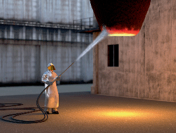

Hitzearbeiten sind Arbeiten, bei der es infolge kombinierter Belastung aus Hitze, körperlicher Arbeit und gegebenenfalls Bekleidung zu einer Erwärmung des Körpers und damit zu einem Anstieg der Körpertemperatur kommt. Das kann zu hohen Kreislaufbelastungen, zu Kreislaufkollapsen, Hitzekrämpfen oder Hitzeschlägen führen.
Deswegen sind bei Hitzearbeiten spezielle Schutzmaßnahmen vorzusehen. Technische Schutzmaßnahmen oder organisatorische Schutzmaßnahmen (zum Beispiel Beschattung oder Unterbrechen der Arbeiten) haben Vorrang vor Verwendung von Hitzeschutzkleidung.
Hitzearbeiten können Arbeiten an technologisch bedingten hitzebelastenden Arbeitsplätzen oder Arbeiten im Freien unter der Sonne sein.